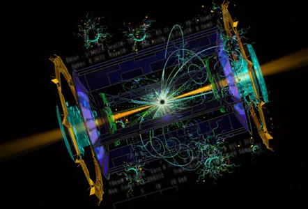

O acelerador de particulas é conhecido como colisor de átomos ou máquina de big bang
O Objetivo do acelerador é acelerar partículas a velocidades próximas à da luz. Para que isso ocorra, utiliza dois fatores: criar um campo magnético e fazer as partículas colidirem
O acelerador de partículas cria um poderoso campo magnético. Com isso, as partículas se movem aproximadamente na velocidade da luz (cerca de 9,9999999% a velocidade da luz).
As partículas circulam dentro do acelerador circular, fazendo com que ela acumule energia o suficiente para um big bang.
O acelerador de partículas é uma ferramenta crucial na física de partículas e na investigação das propriedades da matéria. Ele funciona acelerando partículas subatômicas, como prótons ou elétrons, a altas velocidades próximas à velocidade da luz e, em seguida, colidindo essas partículas entre si ou com alvos fixos.
Essas colisões geram uma série de fenômenos físicosque permitem aos cientistas estudar as propriedadesda matéria em escalas muito pequenas. Aqui estãoalgumas maneiras pelas quais o acelerador departículas ajuda os cientistas a entender aspropriedades da matéria:
Quando as partículas se colidem, eles criam resíduos e sintetizam novos elementos que são estudados pelo cientistas.
Sirius é um dos maiores aceleradores de partículas do mundo, localizado no Brasil. A Sirius é a insfraestrura científica mais complexa já construída no mundo, com nivelamento perfeito para evitar oscilações. Ela acelera partícula, inclusive elétrons, dentro de seus tubos e possui estações experimentais para pesquisas.
O acelerador de elétrons da Sirius é composto por uma série de componentes complexos, incluindo ímãs supercondutores, tubos de vácuo e sistemas de rádio frequência. Esses elementos trabalham em conjunto para acelerar os elétrons a velocidades próximas à da luz.
Após serem acelerados, os elétrons são injetados no anel de armazenamento, onde circulam em órbitas fechadas mantidas por poderosos ímãs supercondutores. Esse anel é projetado para manter os elétrons em movimento constante, gerando continuamente a luz síncrotron.
A luz síncrotron é encaminhada para as linhas de luz, que são estações experimentais especializadas. Cada linha de luz possui instrumentação específica para uma variedade de experimentos em diferentes áreas científicas, como física, química, biologia, ciência dos materiais, entre outras.
Os pesquisadores têm acesso a uma ampla gama de técnicas experimentais avançadas, como espectroscopia de absorção de raios-X, difração de raios-X, microscopia de fluorescência de raios-X e microtomografia computadorizada, entre outras. Isso permite investigações detalhadas em nível atômico e molecular, fornecendo insights valiosos em diversas áreas de pesquisa.
Além disso, a infraestrutura da Sirius inclui sistemas de controle sofisticados para garantir a operação confiável e eficiente da fonte de luz síncrotron. Isso envolve sistemas de refrigeração para manter os componentes supercondutores em temperaturas extremamente baixas, sistemas de vácuo para garantir condições ideais dentro do anel de armazenamento, e sistemas de detecção de feixe para monitorar e controlar o feixe de elétrons.
Por esso, a Sirius representa uma infraestrutura de ponta que impulsiona a pesquisa científica e tecnológica no Brasil e no mundo, oferecendo aos pesquisadores ferramentas avançadas para investigar a estrutura e propriedades da matéria em nível atômico e molecular.
É possível em que o acelerador de partículas não funcione em alguns dispositivos móveis
Pressione o botão abaixo para abrir o acelerador de partículas:
Gostaríamos de informar que o nosso projeto está em andamento e avançando conforme o planejado. No entanto, como é comum em projetos dessa natureza, podem surgir desafios ao longo do processo. Queremos garantir que estejam sempre atualizados sobre o progresso do projeto e que estamos comprometidos em oferecer a melhor experiência possível. Se surgirem quaisquer problemas durante o desenvolvimento, estaremos prontos para resolvê-los de forma rápida e eficiente.
Pedimos desculpas antecipadamente por qualquer inconveniente que possa surgir e agradecemos pela sua compreensão e apoio contínuo.